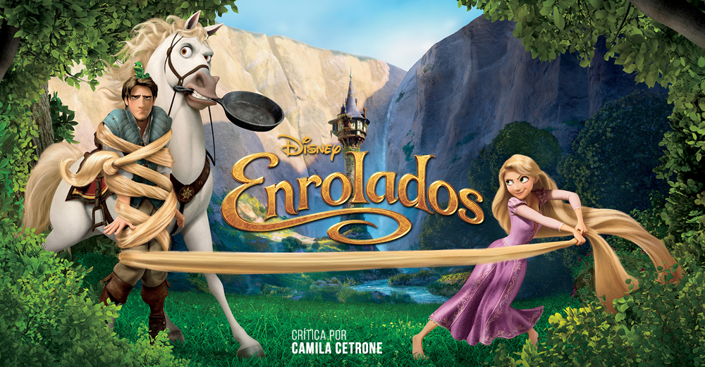

Uma mulher idosa e egoísta chamada Mamãe Gothel usa o poder de uma flor para permanecer jovem por séculos, escondendo-a de todos.
Ela sequestra a princesa e a trancafia em uma torre escondida, criando-a como sua filha.Rapunzel cresce isolada, acreditando que o mundo exterior é perigoso demais.
Rapunzel faz um trato com ele: se Flynn a levar para ver as lanternas e trazê-la de volta em segurança, ela devolve o tesouro.
Rapunzel finalmente percebe a verdade: ela é a princesa perdida.